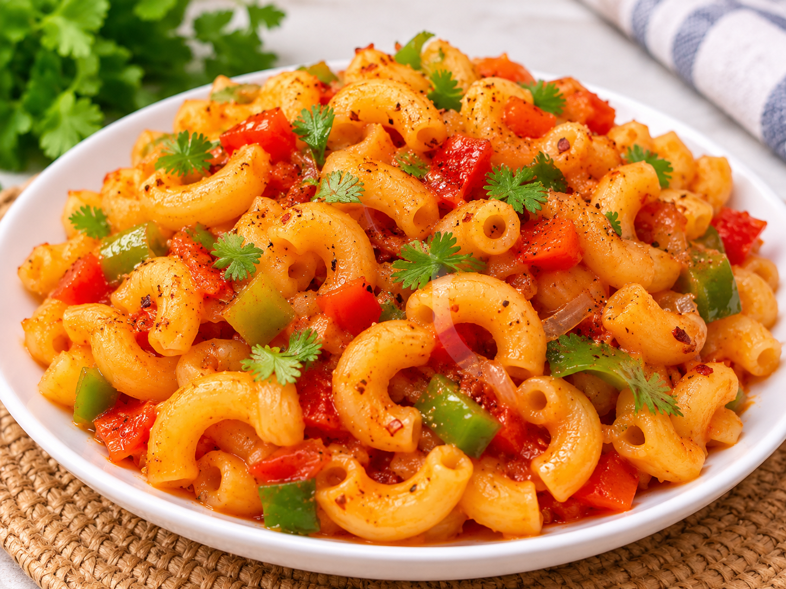

Macaroni

Description
Macaroni is a delicious and easy-to-make pasta dish prepared with boiled macaroni, fresh vegetables, and flavorful spices.
Ingredients
- 2 cups macaroni
- 1 onion (chopped)
- 1 tomato (chopped)
- 1 tsp garlic paste
- 2 tbsp tomato sauce
- ½ tsp chili flakes
- ½ tsp black pepper
- Salt to taste
- 2 tbsp cooking oil
Steps:
- Boil macaroni in salted water until soft, then drain.
- Heat oil in a pan and fry the chopped onion until soft.
- Add garlic paste and cook for a minute.
- Add tomatoes and capsicum. Cook until tender.
- Add tomato sauce, chili flakes, black pepper, and salt.
- Add boiled macaroni and mix everything well.
- Cook for 2–3 minutes and serve hot.